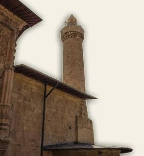
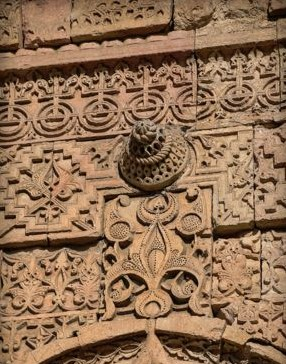
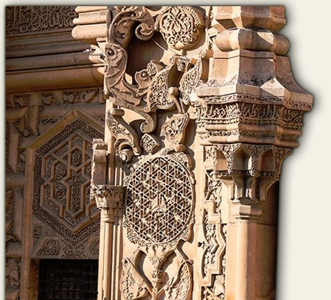
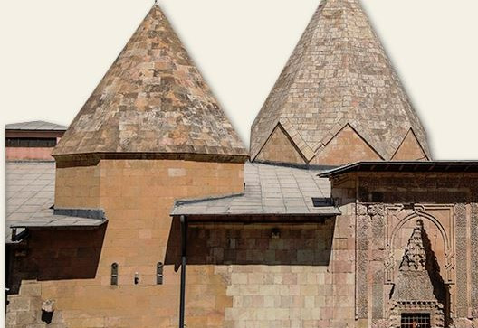
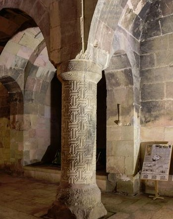
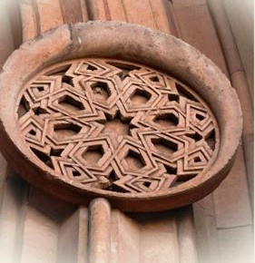

Sivas Ulu Camii
Ulu Cami, kuzey-güney doğrultusunda dikdörtgen plânlı ve tümüyle kesme taşlarla yapılmış bir yapıdır. Camiye giriş çıkışı sağlayan kuzey, batı ve doğu yönlerde üç ayrı anıt kapı yer almaktadır.
İç mekân, sekizgen payeleri birleştiren çift yönlü sivri kemerlerle farklı genişlikte yirmi beş birime ayrılmıştır.
Büyük boyutlu mihrap önü dilimli, orta bölüm ise oval birer kubbeyle örtülüdür. Sekizgen aydınlatma feneri bulunan orta bölümün kubbesi sekizgen piramidal külâhla kaplıdır.
Diğer birimlerin örtü sistemini yıldız, artı ve bileşik tonozlar oluşturmuştur. Güneydoğudaki şah mahfili de bileşik tonoz örtüsü ile dikkati çekmektedir.
Caminin iç mekânı, kapılara nazaran sadelik içermektedir.


Batı Kapı
Bu kapının, Çarşı Kapı, Çıkış Kapısı, Gölgeli Kapı gibi isimlerinin yanısıra, son zamanlarda yaygın olarak kullanılan ismi "Tekstil Kapı”dır. İnce taş işlemeciliğinin zirveye ulaştığı kapı, bir kilimi ya da seccadeyi anımsattığı ve yüksek oranda dantel örneklerini sergilediği için bu ismi almıştır.
Kapıda en dikkat çeken unsur dışa çıkıntılı biçimdeki kilit taşıdır.
Yüzeyi, demircileri simgeleyen güğüm başı motiflidir. Baş mimar bu eserin tamamında taşların birbirine geçme ve tutma şekli olan kilit taşı yöntemini kullanmıştır. Orta kısımda lale ve lale yaprakları bulunmaktadır.
Bu eserde lale motifleri çok sayıda farklı şekillerde kullanılmıştır. Lale, tasavvufta Allah’ı temsil eder, çünkü lale tek bir soğandan tek bir bitki olarak yetişir ve tekliği ifade eder.
Kapının iç kısmında sağ ve solda yer alan sütunlar, denge sütunlarıdır. Sağ denge sütununun üzerinde Allah lafzı orijinal Arapça metni ile yatay olarak yazılmışken, sol taraftaki sütunda Allah lafzı açılı tarzda yazılmıştır.
Bu sütunlar 1939 Erzincan depremine kadar üzerindeki ok işaretleri yönünde dönmekteydi. Batı kapıda Mayıs ile Eylül ayları arasında, ikindi namazından 45 dakika önce, insan silueti şeklinde bir gölge oluşmaktadır.
Bu siluet, önce Kur’an okuyan, namaz saati yaklaştığında ise ellerini bağlayarak kıyamda duran bir insan gölgesi şeklini almaktadır.
Cennet Kapı
Bu eserde her kapı ayrı bir güzelliğe sahip olmakla birlikte en görkemli ve ihtişamlı kapı bu kapıdır. Kapı, kaleye baktığı için Kale Kapı, kuzeye baktığı için Kuzey Kapı, cemaatin giriş kapısı olarak kullanıldığı için Cümle Kapısı gibi isimlerle anılmakla birlikte en yaygın bilinen ve kullanılan ismi Cennet Kapıdır.
Bu kapıya cennet kapı adının verilmesi, üzerindeki tüm motiflerin cenneti tasvir etmesi sebebiyledir. Kuran-ı Kerim’de geçen cenneti anlatan ayetlerdeki eşsiz cennet nimetlerinin tasvirleri burada taşa nakşedilmiştir.
Anlatılmak istenen cennet olunca, onu anlatan motifler de bir o kadar harika ve benzersiz olmuştur. Kapının tamamı bir cennet bahçesine benzetilerek cennet ve cennetin katmanları anlatılmıştır. Sağ taraftaki yıldız bordüründe "Adaletli sultanın mutluluğu, egemenliği ve saadeti ebedi olsun" ifadesi, simetrisinde ise Ayetü’l-Kürsi'nin, "Allah'tan başka ilah yoktur, sadece O vardır" anlamındaki kısmın metni yazılıdır.
Zirve noktasındaki kitabede "Sultanu’l-muazzama, halifenin yardımcısı Alâeddin Keykubat zamanında" yazmaktadır. Bu camiyi yaptıran Beylik, Selçuklu Devleti’ne bağlı olduğundan, devletin başındaki sultanın ismine özellikle cennet kapıda yer vererek Selçuklu Sultanı Alâeddin Keykubat'ı yüceltmiştir.
Kapı üzerinde, hayat ağacı motifleri ve sonsuzluğu ifade eden rozetler bulunmaktadır.
Hayat ağacı motifi ebediyeti, ölümden sonraki ahiret hayatını ve cenneti sembolize etmektedir.


Şah Kapı
Caminin doğu kısmında yer alan bu kapı klasik Selçuklu üslubuyla yapılmış mütevazı bir görünüme sahiptir. Cami içinde şu an sadece iskeleti kalmış bölüme açılan, şahın ibadet için camiye girişte kullandığı kapıdır.
Osmanlı’daki “hünkâr kapısı” olarak tabir edilen kapılarla aynı fonksiyonu görmektedir.
Kapının insan boyundan küçük yapılmasının amacı, insanda tevazu ve kulluk bilincini ortaya çıkarmak ve Şah’ın yalnız Allah'ın huzurunda eğileceğini vurgulamak içindir.
Hünkâr kapıları ve hünkâr mahfilleri, padişah ya da beyleri cemaatten soyutlamak amacıyla değil, olası suikast ve saldırılara karşı korumak maksatlı yapılmıştır.
Kapıdaki kitabede, Şah’a Camiye her girişinde gerçek mülk sahibini hatırlatmak istercesine, ''Mülk, Kahhar ve tek olan Allah'a aittir" ayeti yazılıdır.
Darüşşifa
Bugünkü hastanelerin görevini yapan yapılar için geçmişte şifahane, bimarhane, darüşşifa gibi isimler kullanılmaktaydı.
Divriği Şifahanesi Anadolu’daki darüşşifaların günümüze ulaşan en eski ve en önemlilerinden biridir. Şifahane, Osmanlı döneminde, aynı zamanda pozitif ve dini ilimlerin verildiği bir medrese olarak da kullanılmıştır.
Orta Asya Türk yapı geleneğine bağlı olarak inşa edilen Şifahane, doğu-batı doğrultusunda dikdörtgen plâna sahiptir. Kesme taştan yapılan eser, kapalı avlulu, üç eyvanlı olup batı kanadı çift katlıdır.
En belirgin örtü sistemi, ana eyvanın yıldız tonozudur. Yapıda beşik, sivri, aynalı, çapraz, artı ve yıldız tonozlar da kullanılmıştır.
Avlusu, bezemeli sütunlara çift yönlü kemer atılımıyla artı biçimli dokuz bölüme ayrılmıştır.
Orta bölümün üzeri, iki yanda beşik tonoz kollarının ortadaki köşe taşlı sekizgen kasnakla birleştiği camlı demir doğrama bir külâhla örtülüdür.

Darüşşifa Taç Kapı

Görkemli bir yapıya sahip olan Darüşşifa’nın giriş kapısı “Taç Kapı” olarak adlandırılmıştır. Kapının iç alınlık kısmında Selçuklu’yu simgeleyen beşgen ve sekizgen yıldız motifleri kullanılmıştır.
Kapı üzerinde yer alan yıldız ve hilaller Türk Bayrağındaki hilal ve yıldızın bire bir aynısıdır. Pencereyi ortadan ikiye bölen sütun "denge sütunu"dur. Baş mimar, bu kapıdakinden başka iki adet de cami bölümündeki batı kapıya olmak üzere külliyeye toplam üç adet denge sütunu yerleştirmiştir.
Denge sütunları cami ve şifahanenin dengede olup olmadığını göstermektedir. 1939 yılındaki Erzincan depreminden etkilenerek dönme özelliğini yitirmişlerdir. Taç kapıdaki denge sütununun sağ ve sol kısımlarındaki hilaller içerisine Süleyman mührü olarak nitelendirilen altıgen yıldızlar yerleştirilmiştir.
Sütunun altında bulunan Selçuklu sülüs yazısıyla yazılmış üç satırlık kitabede: "Fahrettin Behram Şah'ın kızı Melike Turan, Allah'ın affına muhtaç aciz kul, adaletli melike bu şifa yurdunun yapılışını 626 H/1228 M yılında emretti.
" ifadesi yer almaktadır. Kapının sağında ve solunda, kabartma rozet şeklindeki bitkisel bezemelerin üzerinde insan figürleri bulunmaktadır. Bunların yüzleri zamanla aşınmıştır.